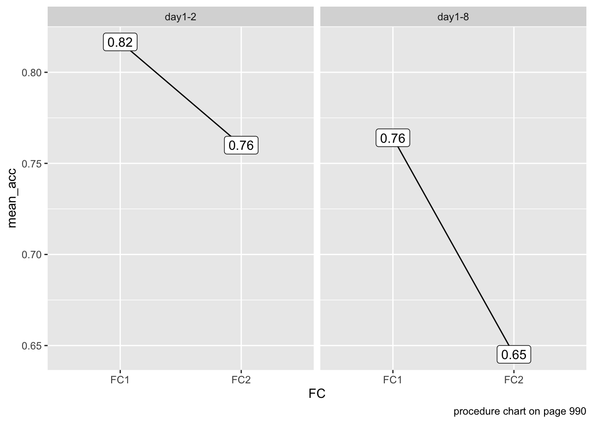
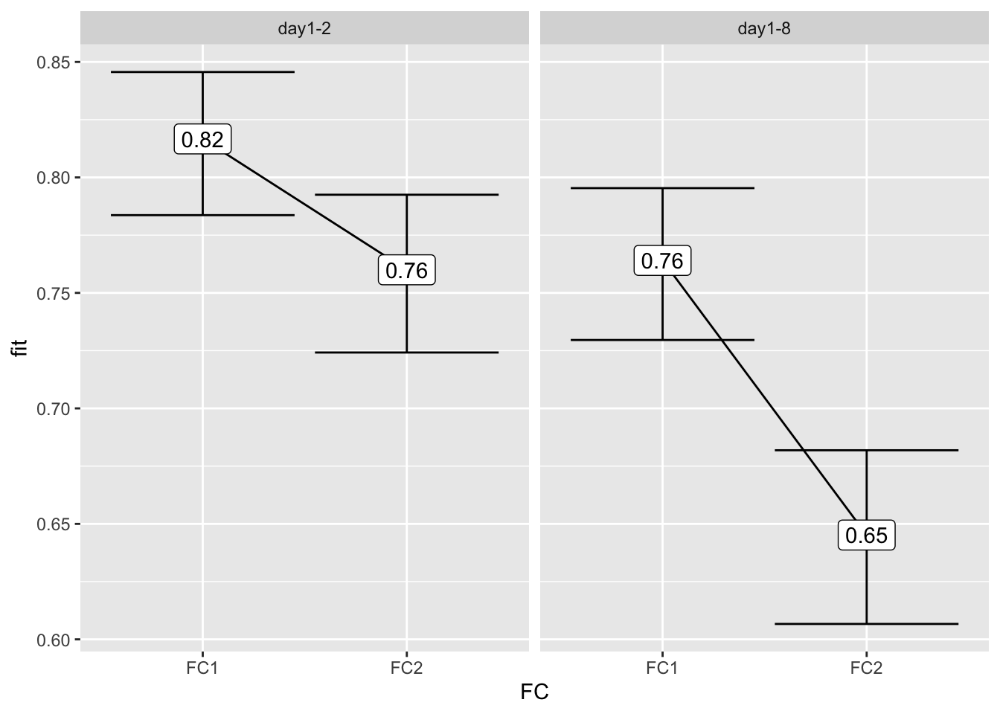
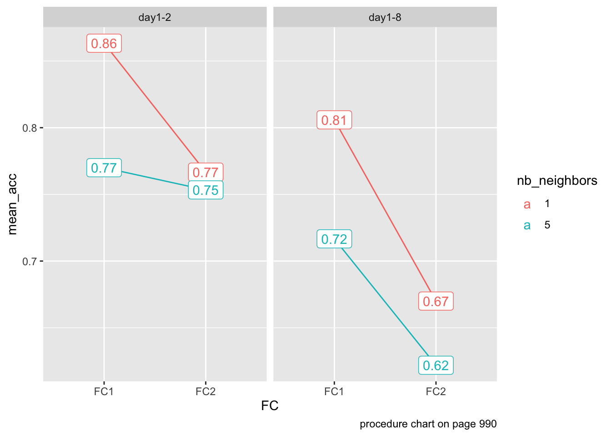
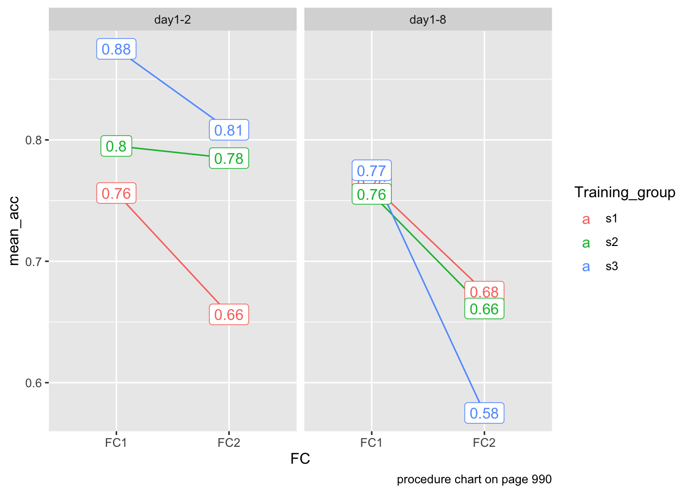

# load library for data analysis
library(tidyverse)Reproducing Open Science Research 2
September 15, 10am to 11am.
For this tutorial, we will be replicating some of the analysis in Palma, P., Marin, M. F., Onishi, K. H., & Titone, D. (2022). Learning, inside and out: Prior linguistic knowledge and learning environment impact word learning in bilingual individuals. Language Learning, 72(4), 980-1016. Paper can be found at https://onlinelibrary.wiley.com/doi/abs/10.1111/lang.12501
Data, code, and more information can be found at https://osf.io/69seu/
Abstract
Although several studies have focused on novel word learning and lexicalization in (presumably) monolingual speakers, less is known about how bilinguals add novel words to their mental lexicon. In this study we trained 33 English–French bilinguals on novel word-forms that were neighbors to English words with no existing neighbors. The number of novel neighbors to each English word varied, as did the cross-linguistic orthographic overlap between the English word and its French translation. We assessed episodic memory and lexicalization of the novel words before and after a consolidation period. Cross-linguistic similarity enhanced episodic memory of novel neighbors only when neighborhood density among the novel neighbors was low. We also found evidence that novel neighbors of English words with high cross-linguistic similarity became lexicalized after a consolidation period. Overall, the results suggest that similarity to preexisting lexical representations crucially impacted lexicalization of novel words by bilingual individuals.
Data
Our first step it to load the tidyverse library (RStudio will prompt you to install it).
Now we can read the data in. Remember to download the file and place it in a directory called data in your project. We will filter any missing data as we read the data in. The dependent variable is ACC (binary, for accuracy).
data <- read_csv("data/OSF_word_learning_FC.csv") %>%
filter(!is.na(ACC))Rows: 2560 Columns: 35
── Column specification ────────────────────────────────────────────────────────
Delimiter: ","
chr (13): Experiment, Training_group, Trainedset, L1, L2, L3, L4, Stimuli, c...
dbl (21): Subject, nb_languages_known, L1_AoA, L1_subjective_fluency, L2_sub...
num (1): L2_AoA
ℹ Use `spec()` to retrieve the full column specification for this data.
ℹ Specify the column types or set `show_col_types = FALSE` to quiet this message.Participants
One participant was excluded because of an error in their assignment to the testing condition. Thus, 32 participants were included in the analyses reported below.
There are multiple measures per participant, so we need to run distinct() on the Subject variable to get number of participants. The nrow() tells use how many row (in this case each row/observation is a participant).
data %>%
distinct(Subject) %>%
nrow()[1] 32We can look at how participants are distributed across experiments and training groups, also using distinct()
data %>%
distinct(Experiment, Subject, Training_group) %>%
count(Experiment)| Experiment | n |
|---|---|
| day1-2 | 15 |
| day1-8 | 17 |
data %>%
distinct(Experiment, Subject, Training_group) %>%
count(Training_group)| Training_group | n |
|---|---|
| s1 | 12 |
| s2 | 10 |
| s3 | 10 |
all participants indicated maximal proficiency in English (9)
Using distinct() again, we will look at their reported L1 fluency.
data %>%
distinct(Subject, L1_subjective_fluency) %>%
summarize(mean(L1_subjective_fluency))| mean(L1_subjective_fluency) |
|---|
| 9 |
There was more variability in terms of French proficiency, mean = 4.69, SD = 2.09, 95% CI [3.97, 5.41], range = 1–9.
Let’s replicate these stats (don’t forget distinct()):
data %>%
distinct(Subject, L2_subjective_fluency) %>%
summarize(n = n(),
mean = mean(L2_subjective_fluency),
sd = sd(L2_subjective_fluency),
min = min(L2_subjective_fluency),
max = max(L2_subjective_fluency),
se = qt(0.975, n - 1) * mean/sqrt(n),
upper = mean + se,
lower = mean - se)| n | mean | sd | min | max | se | upper | lower |
|---|---|---|---|---|---|---|---|
| 32 | 4.96875 | 2.071066 | 1 | 9 | 1.791425 | 6.760175 | 3.177325 |
The mean age of acquisition of French was 8.58 years, SD = 4.36, 95% CI [7.07, 10.10], range = 3–18, indicating that all of the participants were sequential bilinguals.
data %>%
distinct(Subject, L2_AoA) %>%
summarize(n = n(),
mean = mean(L2_AoA),
sd = sd(L2_AoA),
min = min(L2_AoA),
max = max(L2_AoA),
se = qt(0.975, n - 1) * mean/sqrt(n),
upper = mean + se,
lower = mean - se)| n | mean | sd | min | max | se | upper | lower |
|---|---|---|---|---|---|---|---|
| 32 | 8.3125 | 6.098321 | 1 | 35 | 2.996976 | 11.30948 | 5.315524 |
Research questions
What are the impacts of time, neighborhood density in the learning environment, and cross-linguistic similarity on episodic memory for novel words? (page 986)
Descriptive visualization (before running stats)
We hypothesized, first, that episodic memory for novel words may decrease over time.
The interval between experimental Day 1 and Day 2 was either 24 hours or 1 week.
data %>%
group_by(Experiment, FC) %>%
summarize(mean_acc = mean(ACC)) %>%
mutate(diff = diff(mean_acc)) %>%
ggplot(aes(x = FC,
y = mean_acc)) +
geom_line(aes(group = 1)) +
geom_label(aes(label = round(mean_acc, 2))) +
facet_wrap(~Experiment) +
labs(caption = "procedure chart on page 990")`summarise()` has grouped output by 'Experiment'. You can override using the
`.groups` argument.
Results from a model
Let’s run a model with the effect of the interaction of Experiment and FC.
model_experiment <- glm(ACC ~ Experiment:FC,
data = data,
family = binomial)
summary(model_experiment)
Call:
glm(formula = ACC ~ Experiment:FC, family = binomial, data = data)
Coefficients: (1 not defined because of singularities)
Estimate Std. Error z value Pr(>|z|)
(Intercept) 0.59784 0.08394 7.122 1.06e-12 ***
Experimentday1-2:FCFC1 0.89609 0.13482 6.646 3.00e-11 ***
Experimentday1-8:FCFC1 0.57725 0.12535 4.605 4.12e-06 ***
Experimentday1-2:FCFC2 0.55484 0.12721 4.362 1.29e-05 ***
Experimentday1-8:FCFC2 NA NA NA NA
---
Signif. codes: 0 '***' 0.001 '**' 0.01 '*' 0.05 '.' 0.1 ' ' 1
(Dispersion parameter for binomial family taken to be 1)
Null deviance: 2788.4 on 2459 degrees of freedom
Residual deviance: 2738.8 on 2456 degrees of freedom
AIC: 2746.8
Number of Fisher Scoring iterations: 4The variance explained for this model is very low:
# McFadden's R-squared for model
with(summary(model_experiment), 1 - deviance/null.deviance)[1] 0.01780274Let’s look at the effects:
library(effects)Loading required package: carDatalattice theme set by effectsTheme()
See ?effectsTheme for details.effect("Experiment:FC", model_experiment) %>%
data.frame() %>%
ggplot(aes(x = FC,
y = fit,
ymin = lower,
ymax = upper)) +
geom_line(aes(group = 1)) +
geom_errorbar() +
geom_label(aes(label = round(fit, 2))) +
facet_wrap(~Experiment)
Descriptive visualization (before running stats)
Second, we hypothesized that, to the extent that neighborhood density in the learning environment impacts episodic memory, learning many novel neighbors for an existing word may lead to decreased episodic memory for these novel neighbors
s1: one neighbor for List B base words (one-neighbor condition) and five neighbors for List C base words (five-neighbors condition). No neighbors were presented for List A base words (zero-neighbors condition).
s2: one neighbor for List C and five for List A, whereas no neighbors were presented for List B base words.
s3: one neighbor for List A and five for List B, whereas no neighbors were presented for List C base words.
Stimuli have either 1 or 5 neighbors:
data %>% count(nb_neighbors)| nb_neighbors | n |
|---|---|
| 1 | 1240 |
| 5 | 1220 |
data %>%
group_by(FC, Experiment, nb_neighbors) %>%
mutate(nb_neighbors = factor(nb_neighbors)) %>%
summarize(mean_acc = mean(ACC)) %>%
ggplot(aes(x = FC,
y = mean_acc,
color = nb_neighbors)) +
geom_line(aes(group = nb_neighbors)) +
geom_label(aes(label = round(mean_acc, 2))) +
facet_wrap(~Experiment) +
labs(caption = "procedure chart on page 990")`summarise()` has grouped output by 'FC', 'Experiment'. You can override using
the `.groups` argument.
data %>%
group_by(FC, Experiment, Training_group) %>%
summarize(mean_acc = mean(ACC)) %>%
ggplot(aes(x = FC,
y = mean_acc,
color = Training_group)) +
geom_line(aes(group = Training_group)) +
geom_label(aes(label = round(mean_acc, 2))) +
facet_wrap(~Experiment) +
labs(caption = "procedure chart on page 990")`summarise()` has grouped output by 'FC', 'Experiment'. You can override using
the `.groups` argument.
Finally, we hypothesized that, to the extent that cross-linguistic similarity impacts episodic memory, novel neighbors to words that overlap across languages may be easier to recognize.
Generalized linear mixed-effects model
Fixed effects included session for forced-choice timing (FC A, before a consolida- tion period, vs. FC B, after a consolidation period), number of novel neighbors associated with the base word during training (1 vs. 5), and NLD (measure of orthographic distance for translation equivalents across languages). Their in- teractions were also included. Categorical predictors were effects-coded (−.5 vs. .5) to allow for the interpretation of main effects. NLD was standardized with mean of 0 and standard deviation of 1. […] We also added English frequency as a stan- dardized covariate, as frequency is a strong predictor of the speed of lexical access during language processing (e.g., Whitford & Titone, 2012). […] The final random effects structure included a random intercept by participants, a random intercept by items, a correlated random slope for forced-choice task timing (before vs. af- ter consolidation) by participants, and a correlated random slope for number of neighbors (one neighbor vs. five neighbors) by participants.
library(lme4)Loading required package: Matrix
Attaching package: 'Matrix'The following objects are masked from 'package:tidyr':
expand, pack, unpacklibrary(lmerTest)
Attaching package: 'lmerTest'The following object is masked from 'package:lme4':
lmerThe following object is masked from 'package:stats':
stepdata <- data %>%
mutate(NLD_scaled = scale(NLD),
Frequency_scaled = scale(Frequency))
model <- glmer(ACC ~ nb_neighbors_dev * FC_dev * NLD_scaled +
Exp_dev + Frequency_scaled +
(1 + nb_neighbors_dev + FC_dev|Subject) + (1|Stimuli),
family = binomial,
data = data)
summary(model)Generalized linear mixed model fit by maximum likelihood (Laplace
Approximation) [glmerMod]
Family: binomial ( logit )
Formula:
ACC ~ nb_neighbors_dev * FC_dev * NLD_scaled + Exp_dev + Frequency_scaled +
(1 + nb_neighbors_dev + FC_dev | Subject) + (1 | Stimuli)
Data: data
AIC BIC logLik deviance df.resid
2673.7 2772.4 -1319.8 2639.7 2443
Scaled residuals:
Min 1Q Median 3Q Max
-4.0821 -0.7103 0.4327 0.6368 1.4226
Random effects:
Groups Name Variance Std.Dev. Corr
Stimuli (Intercept) 0.006412 0.08007
Subject (Intercept) 0.276048 0.52540
nb_neighbors_dev 0.200890 0.44821 0.05
FC_dev 0.262732 0.51257 -0.19 0.90
Number of obs: 2460, groups: Stimuli, 60; Subject, 32
Fixed effects:
Estimate Std. Error z value Pr(>|z|)
(Intercept) 1.21532 0.10795 11.258 < 2e-16 ***
nb_neighbors_dev -0.38385 0.13009 -2.951 0.00317 **
FC_dev -0.54121 0.13811 -3.919 8.91e-05 ***
NLD_scaled 0.02888 0.05127 0.563 0.57329
Exp_dev -0.55439 0.21206 -2.614 0.00894 **
Frequency_scaled 0.04498 0.05219 0.862 0.38879
nb_neighbors_dev:FC_dev 0.54905 0.20483 2.681 0.00735 **
nb_neighbors_dev:NLD_scaled -0.23163 0.09757 -2.374 0.01760 *
FC_dev:NLD_scaled -0.03842 0.09730 -0.395 0.69291
nb_neighbors_dev:FC_dev:NLD_scaled 0.07793 0.19472 0.400 0.68900
---
Signif. codes: 0 '***' 0.001 '**' 0.01 '*' 0.05 '.' 0.1 ' ' 1
Correlation of Fixed Effects:
(Intr) nb_ng_ FC_dev NLD_sc Exp_dv Frqnc_ nb__:FC_ n__:NL FC_:NL
nb_nghbrs_d -0.018
FC_dev -0.168 0.419
NLD_scaled 0.013 -0.046 -0.011
Exp_dev -0.091 0.017 0.038 -0.007
Frqncy_scld 0.010 -0.003 0.004 0.239 -0.012
nb_ngh_:FC_ 0.045 -0.113 -0.077 0.030 -0.029 0.010
nb_ng_:NLD_ -0.031 0.017 0.023 -0.046 0.007 0.023 -0.021
FC_dv:NLD_s -0.007 0.022 0.015 -0.104 0.004 -0.017 -0.059 0.053
n__:FC_:NLD 0.014 -0.013 -0.045 0.053 -0.002 0.006 0.021 -0.106 -0.054The authors use this report library. I’m not sure I’d recommend it myself.
library(report)
report(model)We fitted a logistic mixed model (estimated using ML and Nelder-Mead optimizer)
to predict ACC with nb_neighbors_dev, FC_dev, NLD_scaled, Exp_dev and
Frequency_scaled (formula: ACC ~ nb_neighbors_dev * FC_dev * NLD_scaled +
Exp_dev + Frequency_scaled). The model included nb_neighbors_dev as random
effects (formula: list(~1 + nb_neighbors_dev + FC_dev | Subject, ~1 |
Stimuli)). The model's total explanatory power is moderate (conditional R2 =
0.16) and the part related to the fixed effects alone (marginal R2) is of 0.06.
The model's intercept, corresponding to nb_neighbors_dev = 0, FC_dev = 0,
NLD_scaled = 0, Exp_dev = 0 and Frequency_scaled = 0, is at 1.22 (95% CI [1.00,
1.43], p < .001). Within this model:
- The effect of nb neighbors dev is statistically significant and negative
(beta = -0.38, 95% CI [-0.64, -0.13], p = 0.003; Std. beta = -0.19, 95% CI
[-0.32, -0.07])
- The effect of FC dev is statistically significant and negative (beta = -0.54,
95% CI [-0.81, -0.27], p < .001; Std. beta = -0.27, 95% CI [-0.41, -0.14])
- The effect of NLD scaled is statistically non-significant and positive (beta
= 0.03, 95% CI [-0.07, 0.13], p = 0.573; Std. beta = 0.03, 95% CI [-0.07,
0.13])
- The effect of Exp dev is statistically significant and negative (beta =
-0.55, 95% CI [-0.97, -0.14], p = 0.009; Std. beta = -0.28, 95% CI [-0.48,
-0.07])
- The effect of Frequency scaled is statistically non-significant and positive
(beta = 0.04, 95% CI [-0.06, 0.15], p = 0.389; Std. beta = 0.04, 95% CI [-0.06,
0.15])
- The effect of nb neighbors dev × FC dev is statistically significant and
positive (beta = 0.55, 95% CI [0.15, 0.95], p = 0.007; Std. beta = 0.14, 95% CI
[0.04, 0.24])
- The effect of nb neighbors dev × NLD scaled is statistically significant and
negative (beta = -0.23, 95% CI [-0.42, -0.04], p = 0.018; Std. beta = -0.12,
95% CI [-0.21, -0.02])
- The effect of FC dev × NLD scaled is statistically non-significant and
negative (beta = -0.04, 95% CI [-0.23, 0.15], p = 0.693; Std. beta = -0.02, 95%
CI [-0.11, 0.08])
- The effect of (nb neighbors dev × FC dev) × NLD scaled is statistically
non-significant and positive (beta = 0.08, 95% CI [-0.30, 0.46], p = 0.689;
Std. beta = 0.02, 95% CI [-0.08, 0.11])
Standardized parameters were obtained by fitting the model on a standardized
version of the dataset. 95% Confidence Intervals (CIs) and p-values were
computed using a Wald z-distribution approximation.report_effectsize(model)Effect sizes were labelled following Chen's (2010) recommendations.
small (Std. beta = 1.21, 95% CI [1.00, 1.42])
very small (Std. beta = -0.19, 95% CI [-0.32, -0.07])
very small (Std. beta = -0.27, 95% CI [-0.41, -0.14])
very small (Std. beta = 0.03, 95% CI [-0.07, 0.13])
very small (Std. beta = -0.28, 95% CI [-0.48, -0.07])
very small (Std. beta = 0.04, 95% CI [-0.06, 0.15])
very small (Std. beta = 0.14, 95% CI [0.04, 0.24])
very small (Std. beta = -0.12, 95% CI [-0.21, -0.02])
very small (Std. beta = -0.02, 95% CI [-0.11, 0.08])
very small (Std. beta = 0.02, 95% CI [-0.08, 0.11])\(R^2\) (read r squared) shows how much of the variance in the data is explained by the idependent variables in the model.
library(MuMIn)
r.squaredGLMM(model)Warning: 'r.squaredGLMM' now calculates a revised statistic. See the help page.Warning: the null model is correct only if all variables used by the original
model remain unchanged. R2m R2c
theoretical 0.05668291 0.1592204
delta 0.03687604 0.1035836